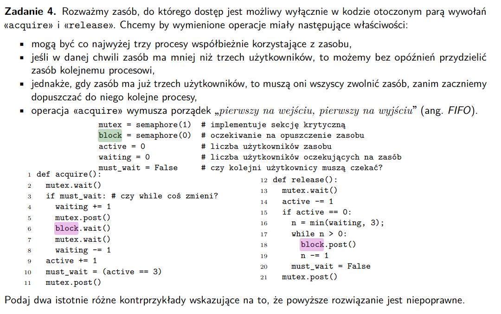

syncVar.lock.acquire();
while(!queue.empty())
syncVar.wait();
// do stuff with queue
syncVar.lock.release();
Zadanie 1. Przypomnij z wykładu na czym polega problem odwrócenia priorytetów oraz metodę jego rozwiązywania o nazwie dziedziczenie priorytetów?
W jakim celu mutex pamięta właściciela, tj. wątek który trzyma blokadę?
W jaki sposób należy rozszerzyć implementację operacji «mutex_lock» i «mutex_unlock», żeby nie dopuścić do odwrócenia priorytetów?
Czy semafory są odporne na problem odwrócenia priorytetów?
Problem odwrócenia priorytetów polega na tym, że
wątek o wysokim priorytecie TH1 nie może wykonać od razu swojej pracy,
ponieważ blokada jest trzymana przez wątek o niskim priorytecie
TH3.
A ponieważ może istnieć dużo wątków o wyższym od TH3 priorytecie, to
może on czekać bardzo długo, a razem z nim TH1, który ma przecież wysoki
priorytet.
Rozwiązaniem jest dziedziczenie priorytetów, czyli tymczasowe (do wyjscia z sekcji krytycznej) nadanie TH3 wysokiego priorytetu, aby prędko oddał blokadę, żeby TH1 mógł się wykonać.
Dzięki temu, że znamy wątek, który trzyma mutex możemy w sytuacji opisanej wyżej zastosować dziedziczenie priorytetów i nadać wątkowi o niskim priorytecie trzymającemu mutex, wysoki priorytet.
mutex_lock patrzy kto obecnie trzyma blokade i jesli owy wątek ma niższy priorytet od nas, to nadaje mu tymczasowo nasz priorytet.
mutex_unlock patrzy czy został zmieniony jego priorytet na czas wykonania sekcji krytycznej, jeśli tak, to ustawia priorytet na oryginalny.
Nie, ponieważ semafory nie wiedzą, kto trzyma semafor.
Zadanie 2. Podaj implementację (w języku C) semafora1 z operacjami «init», «wait» oraz «post»
używając wyłącznie muteksów i zmiennych warunkowych standardu POSIX.1. Pamiętaj, że wartość semafora
musi być zawsze nieujemna.
Podpowiedź: typedef struct Sem { pthread_mutex_t mutex; pthread_cond_t waiters; int value; } Sem_t;
Idea jest taka, ze w wait pobieramy mutex, sprawdzamy warunek i pobieramy item lub śpimy (pthread_cond_wait)
#include <pthread.h>
#include <stdlib.h>
#include <stdio.h>
typedef struct Sem { pthread_mutex_t mutex; pthread_cond_t waiters; int value; } Sem_t;
void init(Sem_t *sem, int val) {
if (val < 0) {
fprintf(stderr, "init value can't be negative!\n");
exit(-1);
}
sem->value = val;
pthread_cond_init(&sem->waiters, NULL); // "the cond_attr parameter is actually ignored."
pthread_mutex_init(&sem->mutex, NULL); // there're 3 attributs 'fast', 'recursive' and 'error checking' and fast is the default one
}
// P (decrease)
void wait(Sem_t *sem) {
pthread_mutex_lock(&sem->mutex);
while (sem->value == 0)
pthread_cond_wait(&sem->waiters, &sem->mutex);
// have somebody produced a new item?
// we take the item!
sem->value--;
pthread_mutex_unlock(&sem->mutex);
}
// V (increase)
void post(Sem_t *sem) {
pthread_mutex_lock(&sem->mutex);
// i assume there's no buffer size limit cause it's not specified in the assignment
sem->value++;
// If no threads are waiting on cond, nothing happens
pthread_cond_signal(&sem->waiters);
pthread_mutex_unlock(&sem->mutex);
}
Zadanie 3. Opisz semantykę operacji «FUTEX_WAIT» i «FUTEX_WAKE» mechanizmu futex(2) [ 1, 2.3.6] wykorzystywanego w systemie Linux do implementacji środków synchronizacji w przestrzeni użytkownika.
Czym różnią się blokady adaptacyjne (ang. adaptive lock) od zwykłych blokad usypiających?
Zreferuj implementację prostej blokady z operacjami __lock i __unlock.
Przyjmujemy, że zmienna «libc.need_locks» ma wartość 1.
Funkcje «__futexwait» i «__wake» są zdefiniowane w pliku pthread_impl.h.
Instrukcje atomowe zwracają starą wartość modyfikowanej komórki pamięci. Co wyraża wartość blokady?
Jak zachowuje się blokada w warunkach wysokiego współzawodnictwa?
W jakich warunkach usypiamy i wybudzamy wątki?
long syscall(SYS_futex, uint32_t *uaddr, int futex_op, uint32_t val,
const struct timespec *timeout, /* or: uint32_t val2 */
uint32_t *uaddr2, uint32_t val3);
FUTEX_WAIT: sprawdza, czy pod adresem uaddr jest wartosc val, jesli
nie to wychodzi z errorem EAGAIN (pozwala to zapobiec lost wake-ups),
jesli tak to spi az albo nie zostanie wybudzony przez FUTEX_WAKE, albo
nie skończy się timeout (jeśli był ustawiony)
FUTEX_WAKE: budzi maksymalnie val wątków oczekujących na uaddr
Blokady adaptacyjne korzystają ze spinlocka, jeśli w oparciu o jakieś
heurystyki spodziewają się krótkiego czasu oczekiwania (a jest to dość
powszechne).
Jeśli jednak czekają już długo, to przechodzą w stan uśpienia.
Blokady adaptacyjne są bardziej efektywne dla krótkich czasów
oczekiwania, bo nie trzeba robić content switcha do kernela.
/* This lock primitive combines a flag (in the sign bit) and a
* congestion count (= threads inside the critical section, CS) in a
* single int that is accessed through atomic operations. The states
* of the int for value x are:
*
* x == 0: unlocked and no thread inside the critical section
*
* x < 0: locked with a congestion of x-INT_MIN, including the thread
* that holds the lock
*
* x > 0: unlocked with a congestion of x
*
* or in an equivalent formulation x is the congestion count or'ed
* with INT_MIN as a lock flag.
*/
void __lock(volatile int *l)
{
int need_locks = libc.need_locks; // 1
if (!need_locks) return;
/* fast path: INT_MIN for the lock, +1 for the congestion */
int current = a_cas(l, 0, INT_MIN + 1); // cmpxchg - sprawdzamy czy l == 0, jak tak to ustawiamy l na INT_MIN + 1 (INT_MIN daje flage, czyli ze CS jest zajety a 1 ze 1 watek)
if (need_locks < 0) libc.need_locks = 0;
if (!current) return; // nie było wątków w sekcji krytycznej i udało nam się ustawić jeden wątek (nas)
/* A first spin loop, for medium congestion. */
// próbujemy 10 razy wziąć blokade
for (unsigned i = 0; i < 10; ++i) {
if (current < 0) current -= INT_MIN + 1; // moze ktos zwolnil locka? załóżmy, że lock jest zwolniony i spróbujmy go wziąć
// assertion: current >= 0
int val = a_cas(l, current, INT_MIN + (current + 1));
if (val == current) return; // było current wątków i udało nam się dodać nasz wątek do kolejki
current = val;
}
// Spinning failed, so mark ourselves as being inside the CS.
current = a_fetch_add(l, 1) + 1; // "a_fetch_add atomically adds the value argument to the pointed-to object and returns the _old_ value"
/* The main lock acquisition loop for heavy congestion. The only
* change to the value performed inside that loop is a successful
* lock via the CAS that acquires the lock. */
for (;;) {
/* We can only go into wait, if we know that somebody holds the
* lock and will eventually wake us up, again. */
if (current < 0) {
__futexwait(l, current, 1); // nie ma wyjścia, idziemy spać
current -= INT_MIN + 1;
}
/* assertion: current > 0, the count includes us already. */
int val = a_cas(l, current, INT_MIN + current);
if (val == current) return; // :DDDDD
current = val;
}
}
void __unlock(volatile int *l)
{
/* Check l[0] to see if we are multi-threaded. */
if (l[0] < 0) {
if (a_fetch_add(l, -(INT_MIN + 1)) != (INT_MIN + 1)) { // jeśli jest tylko jeden wątek w sekcji krytycznej, to nie ma po co go budzić, bo nie spi!
__wake(l, 1, 1);
}
}
}
Próbujemy pobrać blokade w trzech etapach: fast path (udało się pobrać od razu), medium congestion (próbujemy 10 razy), heavy congestion (śpimy, aż ktoś nas nie wybudzi)
/* This lock primitive combines a flag (in the sign bit) and a
* congestion count (= threads inside the critical section, CS) in a
* single int that is accessed through atomic operations. The states
* of the int for value x are:
*
* x == 0: unlocked and no thread inside the critical section
*
* x < 0: locked with a congestion of x-INT_MIN, including the thread
* that holds the lock
*
* x > 0: unlocked with a congestion of x
*
* or in an equivalent formulation x is the congestion count or'ed
* with INT_MIN as a lock flag.
*/
Spinlockuje
Usypiamy, jak nie udało się pobrać spinlockiem blokady.
Wybudzamy, jeśli więcej niż jeden wątek jest na blokadzie (jeśli jest
jeden, to jest on w sekcji krytycznej obecnie, więc nie ma kogo
budzić)

Jeśli acquire() będzie między 5tą a 6tą linią, tzn. po wyjściu z mutexa, ale przed wejściem do blocka, a wtedy wykona się release robiący block.post(), to będziemy mieć lost wakeup.
jeśli acquire() będzie między 6tą a 7tą linią, tzn. po wyjściu z
block, a przed wejściem do mutexa, ale w tym czasie przyjdą 3 wątki
które zrobią acquire(), a potem nasz wątek się dokończy, to zwiększy
active z 3 do 4 (co łamie trzeci warunek) i ustawi must_wait na
false.
Problem ten by się rozwiązał jakbyśmy właśnie używali while zamiast
if.